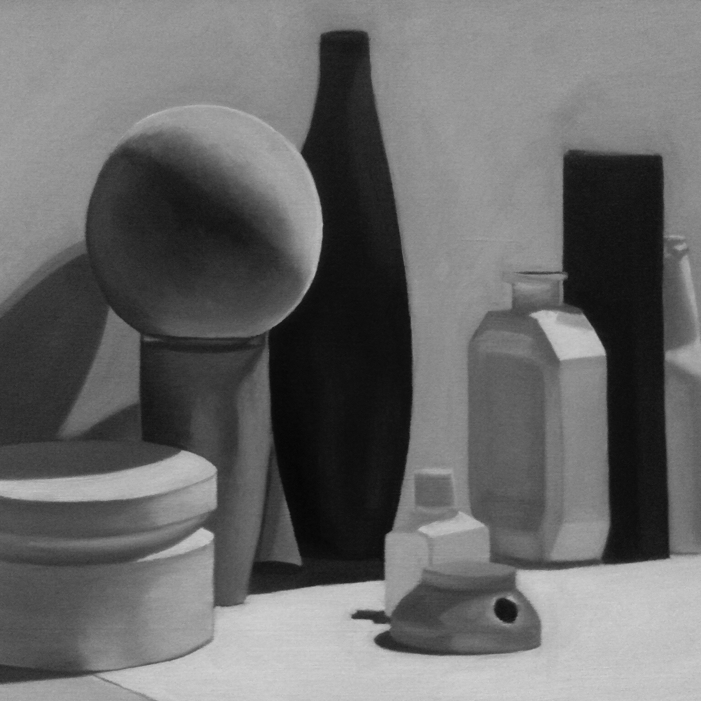
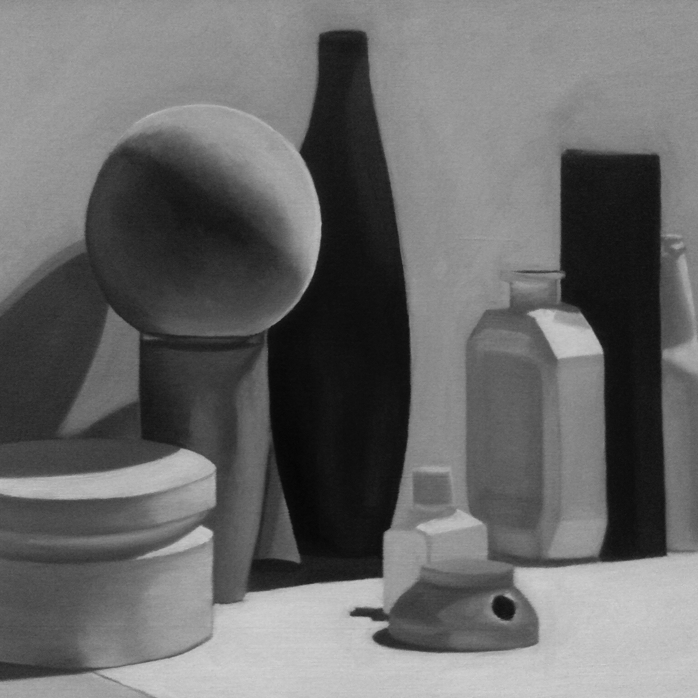

These are some works of art that I did while I was a student at Amherst College. The drawings were done in an Intro to Drawing course that I took over the summer at UMass Amherst, first in pencil, then charcoal, and then ink. The paintings were done in oil on canvas in Painting I with Prof. Bob Sweeney. The first is monochromatic done in Ivory Black and Titanium White, the second with many colors, and the third with a limited palette of Alizarin Crimson, Yellow Ochre, and Ultramarine Blue (with Ivory Black and Titanium White). The first two were of still lives that the professor set up for us, and the third was a still life that I set up in my dorm room with objects that were meaningful to my life at that time. The prints were made in Printmaking I with Prof. Betsey Garand. The first and third are aquatints and the second is an engraving. The sculptures were made in Sculpture I with Prof. Carol Keller. They are all plaster with chicken wire and burlap armatures.